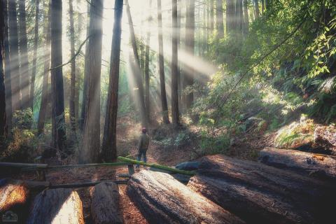
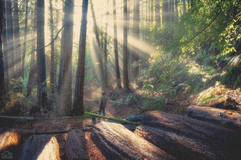
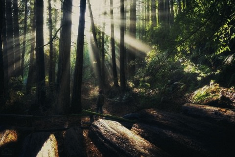
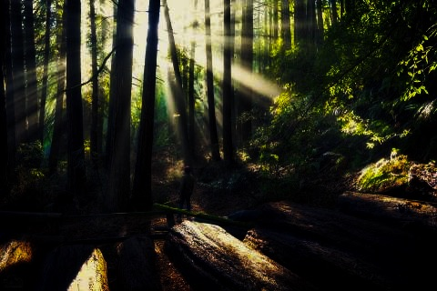
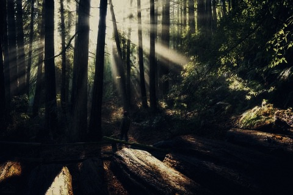
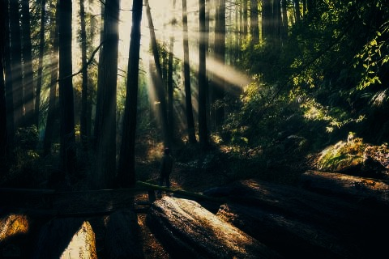
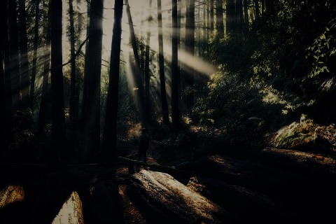
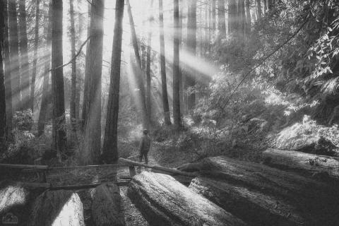
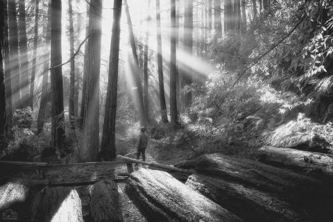
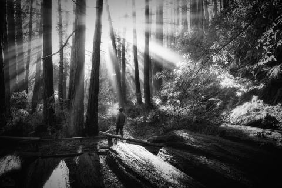

Presets
A preset is a saved set of slider values. Apply a look in one click, save your own, and use them on many photos at once.
Preview and apply
- The Presets section in Develop's left column. ＋ creates a preset; ⇕ collapses every group.
- Search filters every group by name.
- Groups: yours first, then the built-in packs. Click a group to open or close it. Built-in presets show a lock.
- Rest the pointer on a preset to see it on your photo in the Navigator. Click to apply it.
- Recent: the presets you applied last, newest first. See Recent.
Applying is one history step (Preset: Gold 200), so ⌘Z undoes it. A preset only changes the settings it includes; everything else on the photo stays as it was.
Presets from the keyboard
Click a preset or a group (or press ⌃Tab until the left column has focus) and the list takes the arrow keys, like a list in Finder. The highlighted row shows a thin blue bar at its left edge. Tab moves between the list and the Search Presets field; Esc leaves the field.
| ↑ · ↓ | Previous or next row. On a preset, the Navigator previews it, just as resting the pointer does; the photo itself doesn't change. |
| Return · Space | Apply the highlighted preset (one history step), or open or close the highlighted group. |
| → · ← | Open a group (again to go into it) · close it (from a preset, go up to its group). |
| Esc | Put the preview away and give the arrows back to the photo. |
Recent
The Recent group at the top of the Presets section lists the last six presets you applied, from any group, newest first. Applying one again moves it back to the top. It's there as soon as you've applied a preset, and stays between launches.
- Right-click a preset in Recent
- Remove from Recent, then the preset's usual menu.
- Right-click the Recent group
- Clear Recent.
- Right-click photos
- Apply Develop Preset › Recent has the same list.
Recent hides while you search (the search already finds every preset). A deleted preset, or one in a hidden pack, drops out of the list.
Amount
After you click a preset, an Amount slider appears at the top of the Presets section. Drag it from 0 to 200% to use the look more gently or more strongly. It updates the same history step, and goes away when you edit another setting or open another photo. Double-click it to go back to 100%.
Create a preset
- Edit a photo until you like it.
- Click ＋ in the Presets header, or Develop › New Preset… (⇧⌘N).
- Type a Preset Name and pick a Group (or New Group…). Leave it as User Presets if you're not sure.
- Tick the settings the preset should carry. A setting still at its default shows “(no change)”.
- Click Create.
What's unticked to start. Profile, White Balance, Lens Corrections, Transform, Crop and Masks depend on the photo, so they start unticked, as in Lightroom. The dialog remembers your last choice.
Manage presets and groups
- Right-click your preset
- Apply · Update with Current Settings… · Rename… · Move to Group · Duplicate · Show in Finder · Delete…
- Right-click a built-in preset
- Apply · Duplicate to User Presets (to start from it and change it)
- Right-click your group
- Create Preset in This Group… · Rename Group… · Delete Group…
- Right-click a built-in pack
- Hide Group. Develop › Manage Presets… shows or hides each pack.
Photos that used a deleted preset keep their settings. Your presets are kept in one file shared by every catalog: ~/Library/Application Support/Atelier/Presets.json.
Built-in packs
Eight packs, 54 looks, made only from Atelier's own sliders, so they work on RAW, JPEG and HEIC alike. They never touch your exposure, white balance, sharpening, noise reduction, crop or masks, so apply one after you've set those. Each look follows what a film stock or style is known for; the names describe the look, not a brand.










- Atelier
- Clean Product, Fine Art & Pigments (true paper whites and pigment vibrance for artwork), Punchy, Warm Film, Black & White
- Film
- Portrait 400 (soft portrait negative), Gold 200 (warm consumer film), Pastel 400 (airy brightness, mint greens, cyan shadows), Vivid 100 (punchy fine-grain negative), Vivid Slide (slide film), Chrome 64 (classic chrome slide), Tungsten 800T (cool cinema film, glowing warm highlights), Expired (faded, color-shifted), Instant
- Black & White
- Neutral (a plain conversion to start from), Silver Gelatin (darkroom fiber print), Classic 400 (yellow filter, grain), High Contrast (red filter), Push 400 (hard, coarse grain), Dark Sky (deep red filter for landscapes), Infrared Glow (snowy foliage, dark skies), Selenium, Sepia
- Portrait
- Natural Skin, Bright & Airy, Soft Glow, Warm Portrait, Rich Skin (for deeper skin tones), Clean Studio, Moody Portrait
- Landscape
- Vivid Landscape, Dramatic Sky, Golden Hour, Blue Hour, Deep Greens (emerald forest and glowing sunbeams), Autumn Colors, Haze Cut (clears distant haze), Wildlife & Detail (feather and fur micro-contrast)
- Street
- Muted Chrome (low-saturation documentary color), Gritty, Hard Light (deep shadows, bold color), Classic Neg (copper reds, cyan-slate shadows), Daylight Negative (everyday film, emerald-cyan shadows)
- Cinematic
- Teal & Orange, Dark & Moody, Bleach Bypass, Noir, Night City, Warm Drama
- Vintage & Matte
- Faded Matte, Seventies, Midcentury Postcard (turquoise skies, coral reds), Cross Process, Dusty Pastel
Film looks also set the Grain Type of their film: Tabular for Portrait 400, Pastel 400, Tungsten 800T and Bleach Bypass; Fine for Vivid 100 and Chrome 64; Cubic for Gold 200, Expired, Classic 400, Push 400, Gritty, Classic Neg, Daylight Negative, Noir, Seventies and Midcentury Postcard.
Start strong, then dial in. Film and style looks are strong by design. If one is too much for a photo, drag Amount down to 50–70% rather than picking a weaker look.
The pictures above are the real presets rendered on Rosh's redwoods photo outside the app, so they are close but not exact. Hover a preset in Atelier to see it exactly on your own photo.
Many photos at once
- Right-click photos (grid, filmstrip, loupe or Develop) › Apply Develop Preset › a group › a preset. It applies to the whole selection at 100%.
- While importing: the Import dialog's Apply During Import picks a preset for every new photo.
- Copy and paste settings between photos: see Develop basics.